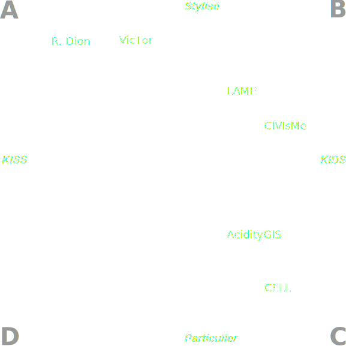
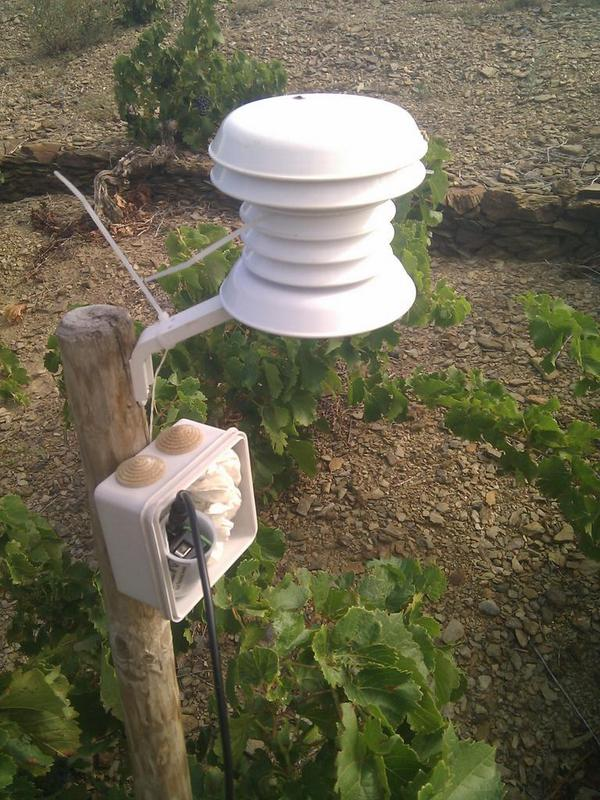
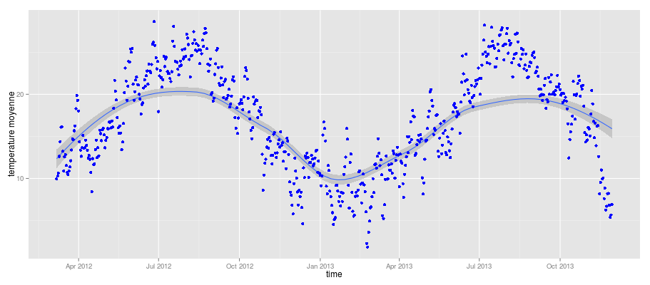
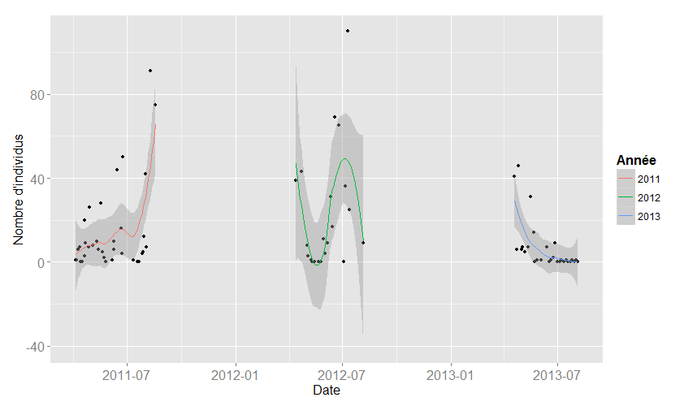
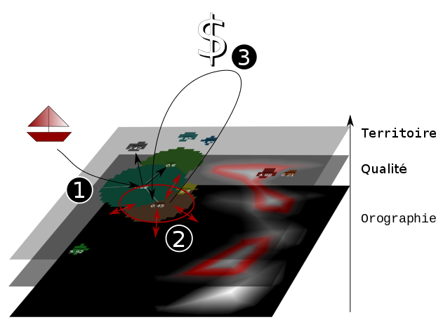
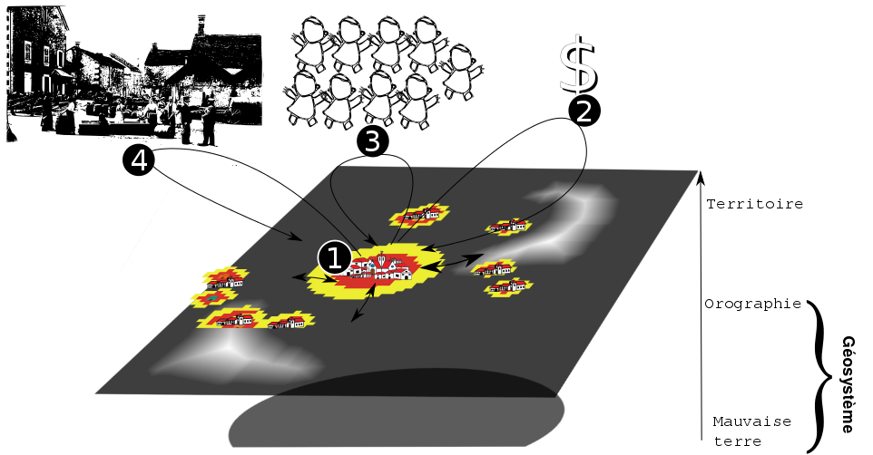

VitiTerroir pour un géographe
l'approche modélisatrice des systèmes spatiaux viticoles
Etienne DELAY doctorant GEOLAB/ @ElCep Sous la direction de Eric Rouvellac et Philippe Allée
Séminaire inaugural VitiTerroir - 16 septembre 2014 lieu : Laboratoire Archéologie et Territoires
Géographie
On parle d'espace dans la modélisation
et des problématiques liées aux territoires et aux paysages
Quand on parle de territoire
“Le territoire tient à la "projection" sur un espace donné des structures spécifique d'un groupe d'humain, qui inclut le mode de découpage et de gestion de l'espace , l'aménagement de cet espace. [...] concept relevant de la sociabilisation de l'espace.”
Brunet et al. 1992
Quand on parle de terroir
“ terroir est une portion de territoire, un taxon, homogène à tous les points de vue, naturels et socio-économiques”
Rouvellac et al., 2012
Quand on parle de paysage
“Le paysage est [...] une apparence et une représentation : un arrangement d'objets visibles et perçus par un sujet à travers ses propres filtres [...]”
Brunet et al. 1992
Paysage et terroir?
“On peut alors considérer le paysage non pas comme une composante du terroir, mais comme l'une de ses résultantes. Les paysages viticoles deviennent alors la partie visible à l'échelle du territoire de la complexité des mécanismes mis en jeu dans la notion de terroir”
Delay 2013
Thématique de recherche
“Prospective paysagère des territoires viticoles de fortes pentes”
Une approche largement tourner vers la modélisation à base d'agents pour explorer la complexité des interactions Homme ↔ Environnement dans un contexte viti-vinicole
Axes de vitiTerroir
et déambulation géographique
En reprenant le document d'objectif de vitiTerroir, quelques exemples de modèles à base d'agents orientés viticulture
- Le changement climatique
- Acidity GIS
- CELL ( Confusion Landscape Lobesias )
- Modification potentielle des règles juridiques
- MASiVe (MontAgne Innovation Viticulture)
- Tranformation des marchés
- Dion still alive
- VicTor ( VIticulture Consomation TOuRaine )
- Transformation probable des pratiques viticole
- CELL ( Confusion Landscape Lobesias )
- Accentuation des processus de croissance urbaine
{kind=link}
Positionner un modèle conceptuellement
- KISS ⇔ KIDS
- Particulier ⇔ Stylisé
- Data driven ⇔ concept driven
Qu'est ce qu'on observe avec ces modèles ?
Des phénomènes et des échelles très différentes !
Des exemples au travers de 4 modèles :
- CELL
- Acidity GIS
- Dion et ViCTor
-
Credit photo : Ellie sur flickr
Mise en bouche
4 modèles et 3 échelles
crédit photo : Richard Munckton sur FlickrCELL :
un modèle "data driven"
De quoi parle-t-on ?
“L'Eudémis (Lobesia botrana) est un ravageur de la vigne aussi connue sous le nom de ver de la grappe ou de tordeuse (comme la cochylis et l'Eulia). ”
Source : Wikipedia

Source : Bayer
Des parcelles témoins
sur Collioure depuis 1999
Le cycle bilogique
le développement des lobesia est température dépendante
Une litérature abondante : Bière et al. 1998, Roditakis et al. 2001, Milonas et al. 2001, etc
Depuis 2012, 11 parcelles sont équipées de capteurs de températures (1 relevé toutes les 10 min), grâce a l' ANR TerViClim
Des observations de terrain
Théoriquement 4 générations de lobesia par ans. C'est généralement sur la 3èmegénération que la récolte est sensible (grappe en formation)
mais dans la pratique, la 3ème génération n'est pas toujours facile à observer!
Formalisation
- Un modèle "data driven"
- Des données SIG, de température, phénologie (date de débourrement , etc.)
- Un modèle de populations statistique issu de la littérature (Developpé par A. Caffarra) et porté en agent.
Implémentation à base d'agents
Comportement de base
Les possibilités
- optimisations des campagnes de lute intégrée
- exploration des effets de passager clandestin
- conséquence et adaptation au changement climatique
Les échelles
- spatiales : îlot de culture (groupe de parcelles)
- temporelle : la journée
Acidity GIS
un modèle entre "concept driven" et "data driven"
Évaluation de l'adaptation au changement climatique
L'étude du changement climatique est un champ de recherche très actuel.
de manière générale deux approches s'opposent (controverse Hannah et al. 2013 VS van Leeuwen et al. 2013)
- Les tenants d'une évolution stricte
- Les tenants des l'adaptation (programme LACCAVE : Long term impacts and Adaptation to Climate ChAnge in Viticulture and Enology)
Températures et acidité de la récolte sur le Cru Banyuls

Formalisation
- Un modèle "data driven"
- Des données SIG, de température, de maturité (d'acidité totale, alcool potentiel, etc.)
- Un modèle "concept driven"
- Des entretiens qui débouche sur la formalisation de comportements
Un modèle à base d'agents
Les possibilités
- explorer les possibilités offertes par le handicape structurale de la pente dans le contexte du changement climatique (CC)?
- évaluer l'impacte des décisions individuelles sur des indicateurs œunologique
- évaluer l'impacte des stratégies de coopératives sur le paysage (est elle un acteur du management territorial (à quels coûts))
- délimitations des capacités d'adaptation au changement climatique. Le territoire peut il conserver ses atouts paysagés (existence de gros ilots viticole, maintient des murettes de pierres sèches, etc.)
Les échelles
- spatiale : une commune, une petite AOC
- temporelle : l'année (une campagne de culture)
Dion et VicTor
deux modèles "concept Driven"
Objet d'étude : les paysages viticoles
comment explorer des comportements passés pour en comprendre les configurations actuelles?
 Le vignoble de Banyuls-sur-Mer
Le vignoble de Banyuls-sur-Mer
En s'intéressant aux zones catastrophique (au sens de R.Thom 1989) pour approcher les limites de validiter du modèle.
Prédire ≠ Expliquer
“L'expérimentation par elle même ne peut guère conduire à des progrès [...]. Elle peut permettre de contrôler que si on à une théorie, donc si l'on dispose d'outils d'exploration. La théorisation [...] est liée à la possibilité de plonger le réel dans un virtuel imaginaire, doté de propriétés génératives[...]”
R. Thom 2009

Formalisation
Deux modèle "concept driven"
- Dion Still Alive : initié en réponse à un article de A. Banos et al. sur cybergeo proposant de revisiter les travaux classiques des théories géographiques. Pour nous R.Dion, 1952, " Querelle Des Anciens et Des Modernes Sur Les Facteurs de La Qualité Du Vin", Annales de Géographie 61, no. 328 (1952): p417–431
- VicTor : initié avec S. Leturcq et X. Rodier (LAT) pour explorer les basculements sur le temps long d'une viticulture de subsistance à une viticulture d'exportation. Quelles sont les conséquences de la compétition spatiale entre différents types d'agriculture et leurs réponses à différents marchés.
Dion & Victor
 Ce qui va nous intéresser :
- L'évolution de la qualité dans le temps
- l'ordonnancement des facteurs qui jouent sur cette qualité
- L'influence de la compétition pour l'espace de deux productions agricoles
- L'influence sur cette compétition de l'évolution des marchés
Dion Still Alive
La qualité est elle une fonction du temps ?
Les possibilités
- plonger le réel dans un virtuel imaginaire, doté de propriétés génératives → Théorisation
Les échelles
- spatiales : Regions
- temporelle : l'année (une campagne de culture)
La minute logiciel libre
- des modèles multi-agents sur Netlogo
- des analyses de sensibilité avec OPENMOLE sur CALI
- des explorations de résultats avec R
 crédit image : GNU fondation
crédit image : GNU fondation
Conclusion
Nous disions ? Vititerroir pour un géographe?
Plusieurs directions?
Pour la modélisation
On peut souligner (si besoin) le caractère complexe des systèmes viti-vinicoles. Il importe donc de prendre garde à :
- Diversité d'échelles spatiale
- Diversité d'agents modélisés
- etc.
qui modifie la manière dont on appréhende la combinaison de trois sous-systèmes : le sociosystème, l’écosystème et le géosystème
Les SMA, l'espace et le temps
Les SMA permettent :
- d'accompagner la réflexion du chercheur
- d'explorer des comportements et des configurations difficilement envisageables
- de préparer à la réception et à l'identification de comportements réels
Deux mouvements parallèles
- Un mouvement historique : ou la formalisation des interactions sera plus conceptuelles et le grain plus grossier (KISS) → Expliquer
- Un mouvement à échelles imbriquer, plus descriptif ou les interactions auront une granularité plus fine (KIDS) → prédire/accompagner
Merci de votre Attention

vous pouvez retrouver cette présentation sur GitHub
 réalisé avec reveal.js
crédit photo : Thomas Misnyovszki on Flick'r
réalisé avec reveal.js
crédit photo : Thomas Misnyovszki on Flick'r